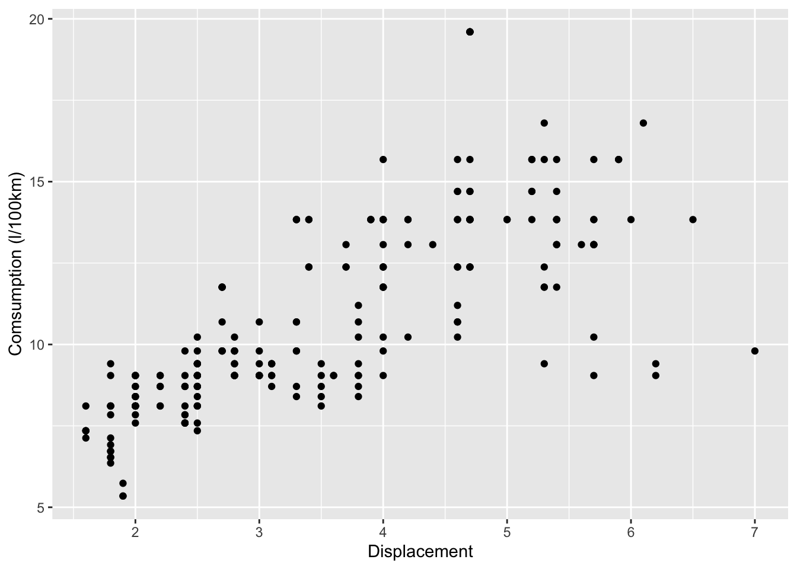

Data Wrangling
On Today’s Plate
The art of getting data into a useful form for visualisation and modelling.
Transform Data

- create subsets of data
- create new variables
- rename variables
- reorder observations
- …
Filter rows with filter()
Create a subset of observations based on values.
Use logical operators.
filter(mpg, class == "2seater")# A tibble: 5 × 11
manufacturer model displ year cyl trans drv cty hwy fl class
<chr> <chr> <dbl> <int> <int> <chr> <chr> <int> <int> <chr> <chr>
1 chevrolet corvette 5.7 1999 8 manual(… r 16 26 p 2sea…
2 chevrolet corvette 5.7 1999 8 auto(l4) r 15 23 p 2sea…
3 chevrolet corvette 6.2 2008 8 manual(… r 16 26 p 2sea…
4 chevrolet corvette 6.2 2008 8 auto(s6) r 15 25 p 2sea…
5 chevrolet corvette 7 2008 8 manual(… r 15 24 p 2sea…Filter rows with filter()
Use multiple conditions.
filter(mpg, class == "2seater", trans == "auto(l4)")# A tibble: 1 × 11
manufacturer model displ year cyl trans drv cty hwy fl class
<chr> <chr> <dbl> <int> <int> <chr> <chr> <int> <int> <chr> <chr>
1 chevrolet corvette 5.7 1999 8 auto(l4) r 15 23 p 2sea…Comparisons
>, >=, <, <=, ==, !=
filter(mpg, hwy >= 30, cyl <= 4)# A tibble: 26 × 11
manufacturer model displ year cyl trans drv cty hwy fl class
<chr> <chr> <dbl> <int> <int> <chr> <chr> <int> <int> <chr> <chr>
1 audi a4 2 2008 4 manual(m… f 20 31 p comp…
2 audi a4 2 2008 4 auto(av) f 21 30 p comp…
3 chevrolet malibu 2.4 2008 4 auto(l4) f 22 30 r mids…
4 honda civic 1.6 1999 4 manual(m… f 28 33 r subc…
5 honda civic 1.6 1999 4 auto(l4) f 24 32 r subc…
6 honda civic 1.6 1999 4 manual(m… f 25 32 r subc…
7 honda civic 1.6 1999 4 auto(l4) f 24 32 r subc…
8 honda civic 1.8 2008 4 manual(m… f 26 34 r subc…
9 honda civic 1.8 2008 4 auto(l5) f 25 36 r subc…
10 honda civic 1.8 2008 4 auto(l5) f 24 36 c subc…
# … with 16 more rowsTake care:
= instead of == produces error. Happens to me all the time…
Logical operators

filter(mpg, cyl == 4 | cyl == 5)
filter(mpg, cyl == 4, drv != "f")Logical operators
%in% can simplify life.
filter(mpg, cyl == 4 | cyl == 5)
filter(mpg, cyl %in% c(4,5))Combining multiple conditions can quickly become confusing. Consider doing it stepwise.
Logical operators
Sometimes it is easier to define what should stay out, instead of what should stay in.
Example: exclude all SUVs from manufacturer Chevrolet
filter(mpg, !(class == "suv" & manufacturer == "chevrolet"))Arrange rows: arrange()
arrange(mpg, hwy)# A tibble: 234 × 11
manufacturer model displ year cyl trans drv cty hwy fl class
<chr> <chr> <dbl> <int> <int> <chr> <chr> <int> <int> <chr> <chr>
1 dodge dakota pi… 4.7 2008 8 auto… 4 9 12 e pick…
2 dodge durango 4… 4.7 2008 8 auto… 4 9 12 e suv
3 dodge ram 1500 … 4.7 2008 8 auto… 4 9 12 e pick…
4 dodge ram 1500 … 4.7 2008 8 manu… 4 9 12 e pick…
5 jeep grand che… 4.7 2008 8 auto… 4 9 12 e suv
6 chevrolet k1500 tah… 5.3 2008 8 auto… 4 11 14 e suv
7 jeep grand che… 6.1 2008 8 auto… 4 11 14 p suv
8 chevrolet c1500 sub… 5.3 2008 8 auto… r 11 15 e suv
9 chevrolet k1500 tah… 5.7 1999 8 auto… 4 11 15 r suv
10 dodge dakota pi… 5.2 1999 8 auto… 4 11 15 r pick…
# … with 224 more rowsArrange rows: arrange()
arrange(mpg, desc(hwy))# A tibble: 234 × 11
manufacturer model displ year cyl trans drv cty hwy fl class
<chr> <chr> <dbl> <int> <int> <chr> <chr> <int> <int> <chr> <chr>
1 volkswagen jetta 1.9 1999 4 manu… f 33 44 d comp…
2 volkswagen new beetle 1.9 1999 4 manu… f 35 44 d subc…
3 volkswagen new beetle 1.9 1999 4 auto… f 29 41 d subc…
4 toyota corolla 1.8 2008 4 manu… f 28 37 r comp…
5 honda civic 1.8 2008 4 auto… f 25 36 r subc…
6 honda civic 1.8 2008 4 auto… f 24 36 c subc…
7 toyota corolla 1.8 1999 4 manu… f 26 35 r comp…
8 toyota corolla 1.8 2008 4 auto… f 26 35 r comp…
9 honda civic 1.8 2008 4 manu… f 26 34 r subc…
10 honda civic 1.6 1999 4 manu… f 28 33 r subc…
# … with 224 more rowsarrange(): multiple columns
arrange(mpg, desc(cyl), hwy)# A tibble: 234 × 11
manufacturer model displ year cyl trans drv cty hwy fl class
<chr> <chr> <dbl> <int> <int> <chr> <chr> <int> <int> <chr> <chr>
1 dodge dakota pi… 4.7 2008 8 auto… 4 9 12 e pick…
2 dodge durango 4… 4.7 2008 8 auto… 4 9 12 e suv
3 dodge ram 1500 … 4.7 2008 8 auto… 4 9 12 e pick…
4 dodge ram 1500 … 4.7 2008 8 manu… 4 9 12 e pick…
5 jeep grand che… 4.7 2008 8 auto… 4 9 12 e suv
6 chevrolet k1500 tah… 5.3 2008 8 auto… 4 11 14 e suv
7 jeep grand che… 6.1 2008 8 auto… 4 11 14 p suv
8 chevrolet c1500 sub… 5.3 2008 8 auto… r 11 15 e suv
9 chevrolet k1500 tah… 5.7 1999 8 auto… 4 11 15 r suv
10 dodge dakota pi… 5.2 1999 8 auto… 4 11 15 r pick…
# … with 224 more rowsSelect columns: select()
select(mpg, model, drv, hwy)# A tibble: 234 × 3
model drv hwy
<chr> <chr> <int>
1 a4 f 29
2 a4 f 29
3 a4 f 31
4 a4 f 30
5 a4 f 26
6 a4 f 26
7 a4 f 27
8 a4 quattro 4 26
9 a4 quattro 4 25
10 a4 quattro 4 28
# … with 224 more rowsSelect columns: select()
select(mpg, year:cty)# A tibble: 234 × 5
year cyl trans drv cty
<int> <int> <chr> <chr> <int>
1 1999 4 auto(l5) f 18
2 1999 4 manual(m5) f 21
3 2008 4 manual(m6) f 20
4 2008 4 auto(av) f 21
5 1999 6 auto(l5) f 16
6 1999 6 manual(m5) f 18
7 2008 6 auto(av) f 18
8 1999 4 manual(m5) 4 18
9 1999 4 auto(l5) 4 16
10 2008 4 manual(m6) 4 20
# … with 224 more rowsSelect columns: select()
Drop Columns ::: {.cell}
select(mpg, -model, - cyl)# A tibble: 234 × 9
manufacturer displ year trans drv cty hwy fl class
<chr> <dbl> <int> <chr> <chr> <int> <int> <chr> <chr>
1 audi 1.8 1999 auto(l5) f 18 29 p compact
2 audi 1.8 1999 manual(m5) f 21 29 p compact
3 audi 2 2008 manual(m6) f 20 31 p compact
4 audi 2 2008 auto(av) f 21 30 p compact
5 audi 2.8 1999 auto(l5) f 16 26 p compact
6 audi 2.8 1999 manual(m5) f 18 26 p compact
7 audi 3.1 2008 auto(av) f 18 27 p compact
8 audi 1.8 1999 manual(m5) 4 18 26 p compact
9 audi 1.8 1999 auto(l5) 4 16 25 p compact
10 audi 2 2008 manual(m6) 4 20 28 p compact
# … with 224 more rows:::
select(): helper functions
- reorder the columns ::: {.cell}
select(mpg, hwy, cyl, everything()):::
- rename columns ::: {.cell}
rename(mpg, efficiency = hwy)
select(mpg, efficiency = hwy, everything()):::
- various other options: see
?select
Add new variables: mutate()
mutate() adds a new column at the end of your dataset.
Example: Calculate fuel consumption (L / 100km) = 1 / hwy /2.352 * 100
mpg2 <- mutate(mpg, consump = 1 / hwy * 2.352 * 100)
head(mpg2)# A tibble: 6 × 12
manufact…¹ model displ year cyl trans drv cty hwy fl class consump
<chr> <chr> <dbl> <int> <int> <chr> <chr> <int> <int> <chr> <chr> <dbl>
1 audi a4 1.8 1999 4 auto… f 18 29 p comp… 8.11
2 audi a4 1.8 1999 4 manu… f 21 29 p comp… 8.11
3 audi a4 2 2008 4 manu… f 20 31 p comp… 7.59
4 audi a4 2 2008 4 auto… f 21 30 p comp… 7.84
5 audi a4 2.8 1999 6 auto… f 16 26 p comp… 9.05
6 audi a4 2.8 1999 6 manu… f 18 26 p comp… 9.05
# … with abbreviated variable name ¹manufacturerAdd new variables: mutate()
Alternative: Stepwise
mpg2 <- mutate(mpg, consump = 1 / hwy * 2.352 * 100)
# alternative: stepwise
mpg2 <- mutate(mpg,
consump = 1 / hwy, # gallons per mile
consump = consump * 2.352 * 100) # L/100km
head(mpg2)# A tibble: 6 × 12
manufact…¹ model displ year cyl trans drv cty hwy fl class consump
<chr> <chr> <dbl> <int> <int> <chr> <chr> <int> <int> <chr> <chr> <dbl>
1 audi a4 1.8 1999 4 auto… f 18 29 p comp… 8.11
2 audi a4 1.8 1999 4 manu… f 21 29 p comp… 8.11
3 audi a4 2 2008 4 manu… f 20 31 p comp… 7.59
4 audi a4 2 2008 4 auto… f 21 30 p comp… 7.84
5 audi a4 2.8 1999 6 auto… f 16 26 p comp… 9.05
6 audi a4 2.8 1999 6 manu… f 18 26 p comp… 9.05
# … with abbreviated variable name ¹manufacturerAdd new variables: mutate()
ggplot(data = mpg2, aes(x = displ, y = consump)) +
geom_point() +
labs(y = "Comsumption (l/100km)", x = "Displacement")
The Pipe: %>%
R-Studio Shortcut: Ctrl + Shift + M
The Pipe: %>%
Passes object on the lefthand side as first argument of function on righthand side.
x %>% f(y)is similar tof(x,y)
filter(mpg, class == "seater" | class == "compact")
# is similar to
mpg %>%
filter(class == "seater" | class == "compact")Combine Multiple Operations: %>%
x %>% f(y)is similar tof(x,y)
mpg_sub <- mpg %>%
filter(class == "2seater" | class == "compact") %>%
select(class, manufacturer, cyl, displ, hwy) %>%
mutate(consump = 1/hwy) %>%
arrange(hwy)
head(mpg_sub)# A tibble: 6 × 6
class manufacturer cyl displ hwy consump
<chr> <chr> <int> <dbl> <int> <dbl>
1 2seater chevrolet 8 5.7 23 0.0435
2 compact volkswagen 6 2.8 23 0.0435
3 2seater chevrolet 8 7 24 0.0417
4 compact volkswagen 6 2.8 24 0.0417
5 compact volkswagen 6 2.8 24 0.0417
6 compact audi 4 1.8 25 0.04 Combine Pipe with ggplot()
mpg %>%
filter(class == "2seater" | class == "compact") %>%
ggplot(aes(x = displ, y = hwy, color = class)) +
geom_point()
Hands on: Exercise Part 1
Part 2
Summarize data: summarise()
Collapses data frame to a single row –>
mpg %>%
summarise(hwy = mean(hwy))# A tibble: 1 × 1
hwy
<dbl>
1 23.4summarise()
Also possible for multiple functions and variables
mpg %>%
summarise(hwy_avg = mean(hwy),
hwy_max = max(hwy),
hwy_min = min(hwy),
hwy_sd = sd(hwy),
displ_avg = mean(displ))# A tibble: 1 × 5
hwy_avg hwy_max hwy_min hwy_sd displ_avg
<dbl> <int> <int> <dbl> <dbl>
1 23.4 44 12 5.95 3.47Summarize different groups: group_by() & summarise()
Question: What is the average hwy for each car-class?
by_class <- mpg %>%
group_by(class) %>%
summarise(hwy_avg = mean(hwy))
by_class# A tibble: 7 × 2
class hwy_avg
<chr> <dbl>
1 2seater 24.8
2 compact 28.3
3 midsize 27.3
4 minivan 22.4
5 pickup 16.9
6 subcompact 28.1
7 suv 18.1
- we can summarise values for all kind of groups!
Group_by() with several grouping variables
by_class_drv <- mpg %>%
group_by(class, drv) %>%
summarise(avg_hwy = mean(hwy))`summarise()` has grouped output by 'class'. You can override using the
`.groups` argument.by_class_drv# A tibble: 12 × 3
# Groups: class [7]
class drv avg_hwy
<chr> <chr> <dbl>
1 2seater r 24.8
2 compact 4 25.8
3 compact f 29.1
4 midsize 4 24
5 midsize f 27.6
6 minivan f 22.4
7 pickup 4 16.9
8 subcompact 4 26
9 subcompact f 30.5
10 subcompact r 23.2
11 suv 4 18.3
12 suv r 17.5
- Important: before we can group this dataset again we need to ungroup() first!
Advanced Example: Group_by() & summarise()
by_class <- mpg %>%
group_by(class) %>%
summarise(hwy_avg = mean(hwy),
hwy_sd = sd(hwy),
displ_avg = mean(displ),
displ_sd = sd(displ),
count = n())
by_class# A tibble: 7 × 6
class hwy_avg hwy_sd displ_avg displ_sd count
<chr> <dbl> <dbl> <dbl> <dbl> <int>
1 2seater 24.8 1.30 6.16 0.532 5
2 compact 28.3 3.78 2.33 0.452 47
3 midsize 27.3 2.14 2.92 0.719 41
4 minivan 22.4 2.06 3.39 0.453 11
5 pickup 16.9 2.27 4.42 0.829 33
6 subcompact 28.1 5.38 2.66 1.10 35
7 suv 18.1 2.98 4.46 1.07 62Advanced Example: Group_by() & summarise() & ggplot()
by_class %>%
ggplot(aes(x = displ_avg, y = hwy_avg, color = class,
ymin = hwy_avg - hwy_sd, ymax = hwy_avg + hwy_sd,
xmin = displ_avg - displ_sd, xmax = displ_avg + displ_sd)) +
geom_point(aes(size = count)) +
geom_errorbar(width = 0) +
geom_errorbarh(height = 0)
Group_by() & mutate()
Calculations on group level without collapsing the dataset.
mpg %>%
group_by(class) %>%
mutate(avg_hwy = mean(hwy, na.rm=TRUE)) %>%
select(1:2, hwy, avg_hwy)Adding missing grouping variables: `class`# A tibble: 234 × 5
# Groups: class [7]
class manufacturer model hwy avg_hwy
<chr> <chr> <chr> <int> <dbl>
1 compact audi a4 29 28.3
2 compact audi a4 29 28.3
3 compact audi a4 31 28.3
4 compact audi a4 30 28.3
5 compact audi a4 26 28.3
6 compact audi a4 26 28.3
7 compact audi a4 27 28.3
8 compact audi a4 quattro 26 28.3
9 compact audi a4 quattro 25 28.3
10 compact audi a4 quattro 28 28.3
# … with 224 more rowsMissing Values
- Missing values are observations with no information.
- this is not the same as zero!
(df <- data.frame(x = c(1,3,NA,7),
y = c(2,4,2,9))) x y
1 1 2
2 3 4
3 NA 2
4 7 9Missing Values
We can check for missing values by is.na.
is.na(df) x y
[1,] FALSE FALSE
[2,] FALSE FALSE
[3,] TRUE FALSE
[4,] FALSE FALSEsummary(df) x y
Min. :1.000 Min. :2.00
1st Qu.:2.000 1st Qu.:2.00
Median :3.000 Median :3.00
Mean :3.667 Mean :4.25
3rd Qu.:5.000 3rd Qu.:5.25
Max. :7.000 Max. :9.00
NA's :1 Missing Values
What happens if we summarize columns with missing values?
# summarise df
df %>%
summarise(x = mean(x),
y = mean(y)) x y
1 NA 4.25# Often better:
# summarise omitting NA's
df %>%
summarise(x = mean(x, na.rm=TRUE),
y = mean(y, na.rm=TRUE)) x y
1 3.666667 4.25Removing NA’s from dataset
You can remove observations (rows) from your dataset that include NA’s in a specific column using
# remove all rows that contain NA's in the column hwy
mpg %>%
filter(!is.na(hwy))# A tibble: 234 × 11
manufacturer model displ year cyl trans drv cty hwy fl class
<chr> <chr> <dbl> <int> <int> <chr> <chr> <int> <int> <chr> <chr>
1 audi a4 1.8 1999 4 auto… f 18 29 p comp…
2 audi a4 1.8 1999 4 manu… f 21 29 p comp…
3 audi a4 2 2008 4 manu… f 20 31 p comp…
4 audi a4 2 2008 4 auto… f 21 30 p comp…
5 audi a4 2.8 1999 6 auto… f 16 26 p comp…
6 audi a4 2.8 1999 6 manu… f 18 26 p comp…
7 audi a4 3.1 2008 6 auto… f 18 27 p comp…
8 audi a4 quattro 1.8 1999 4 manu… 4 18 26 p comp…
9 audi a4 quattro 1.8 1999 4 auto… 4 16 25 p comp…
10 audi a4 quattro 2 2008 4 manu… 4 20 28 p comp…
# … with 224 more rowsData Wrangling Cheat Sheet
https://rstudio.com/wp-content/uploads/2015/02/data-wrangling-cheatsheet.pdf

Summing up

Exercise Part 2
Things are coming together…
Summing up
Reading Data
Reading text files
- most general function is read.table() from base-R

data <- read.table("bigmess.csv", sep = ",", dec = ".",
skip = 0, header = TRUE)
head(data) dataset x y
1 dino 55.3846 97.1795
2 dino 51.5385 96.0256
3 dino 46.1538 94.4872
4 dino 42.8205 91.4103
5 dino 40.7692 88.3333
6 dino 38.7179 84.8718Important variables
For the import we need to define a number of variables
data <- read.table("bigmess.csv",
sep = ",",
dec = ".",
skip = 0,
header = TRUE)
- How are columns separated?
sep = ","(“,”, “;”,…)- decimal points:
dec = "."(“,”)- skip: do not read the first n lines (often metadata)
- are column names included? header = TRUE/FALSE
- ?read.table for help
Package readr simplifies some steps
read_delim() # any delimiter
read_csv() # comma-separated
read_csv2() # comma-separated, dec = ","
read_tsv() # tab-delimited
- Additional arguments:
- col_names
- skip
- na: how are NA’ represented in the data
- Advantage:
- faster than base-R
- they don’t change column formats (e.g. character to factors)
Relative & Absolute paths
Where is the data stored?
Two Options:
Either: Define the full path
path <- "C:/Users/c7701081/Dropbox/Teaching/Data-Management_Science/DataManagement/DS4Ecology/Day_2/bigmess.csv"
data <- read_csv(path, col_names = TRUE)Better: relative path from working directory (project folder)
Project folder:
"C:/Users/c7701081/Dropbox/Teaching/Data-Management_Science/DataManagement/DS4Ecology
Express relative to the project folder, start in project folder using “./”
data <- read_csv("./Day_2/bigmess.csv", col_names = TRUE)Reading excel-files
Often we get data in Excel, or we enter data using Excel.
How to get in R?
Option 1:
- export table as .csv or .txt from excel
- read as shown above
Option 2:
- package(readxl)
library(readxl)
library(readxl)
data <- read_excel("bigmess.xlsx",
col_names = TRUE,
sheet = "data") # specify the worksheet, either by number or name, default is 1Summing up